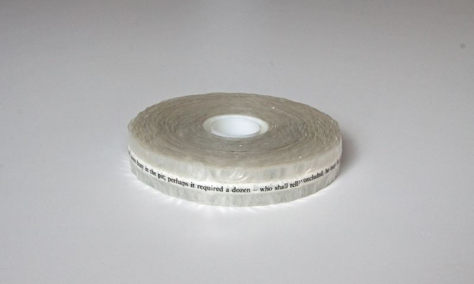
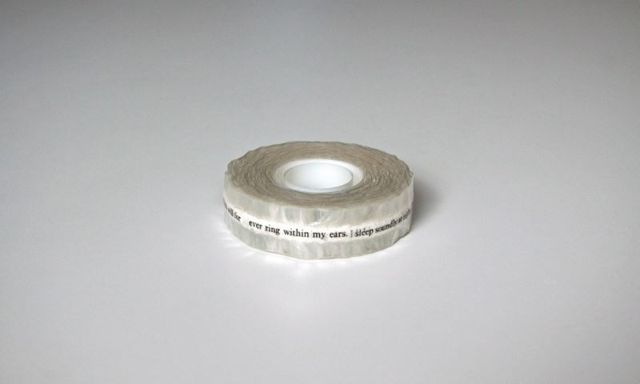
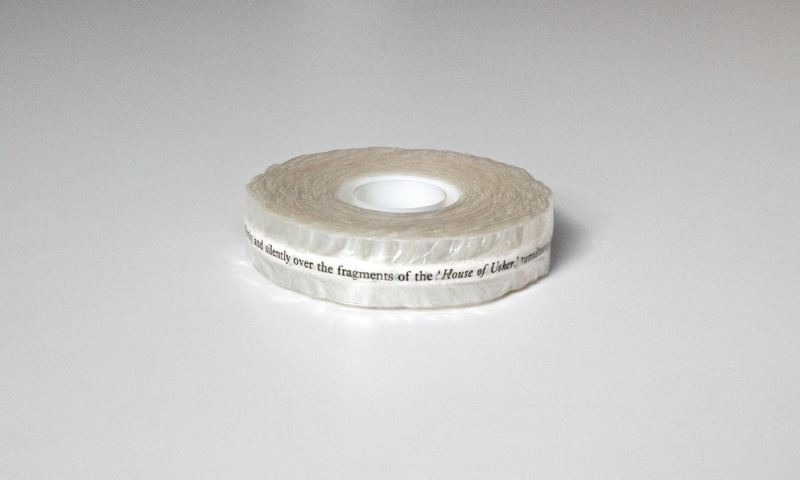
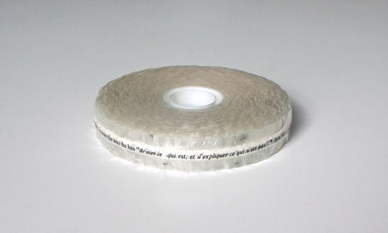
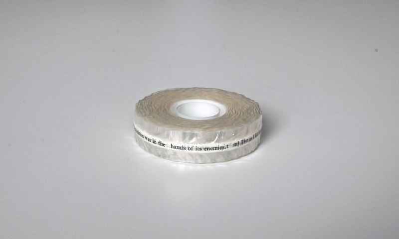
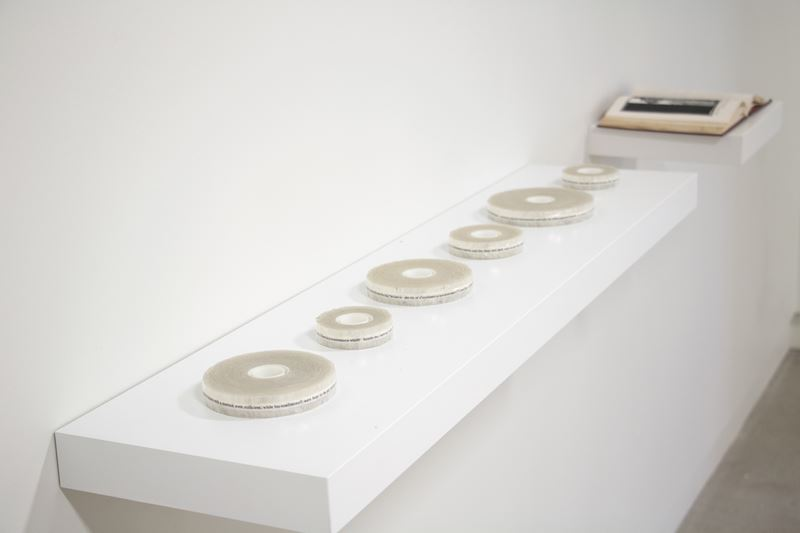

Six Tales of Mystery and Imagination
2008, found book, transparent tape
Six Tales of Mystery and Imagination is initiated from the book "Six Tales of Mystery and Imagination" by Edgar Allen Poe,
containing The Gold-Bug, The Oblong Box, The Mystery of Marie Roget, The Fall of the House of Usher, The Murders in the Rue Morgue, and The Pit and the Pendulum.
Six Tales of Mystery and Imagination consists of six roles of tapes and the book. All the sentences of each story were peeled off from the book with the rolls of transparent tape and rolled back from the first sentence to the last sentence. As a result, six stories are locked in between space of the six rolled transparent tapes and the book becomes empty with the trace of the stories remaining.
Six Tales of Mystery and Imagination consists of six roles of tapes and the book. All the sentences of each story were peeled off from the book with the rolls of transparent tape and rolled back from the first sentence to the last sentence. As a result, six stories are locked in between space of the six rolled transparent tapes and the book becomes empty with the trace of the stories remaining.